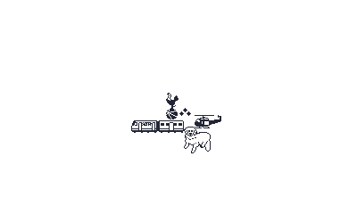
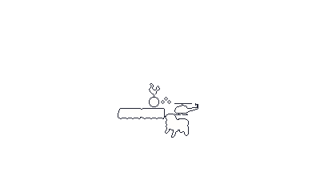

I’ve mentioned Proverbs in a previous devlog (steam link).
I think I’m just going to really lean into this whole thing being “Proverbs but Nonograms”, and instead of uncovering a well known proverb, you uncover some of my ramblings with either a drawing or a photo of mine.
This is likely the gamedev equivalent of ‘a wolf in sheeps clothing’, something like: ‘scope creep masquerading as good design’, but I’ll have a large piece of pixel art, which are smaller pieces combined together. Each of those will map to puzzles, which them map to prizes.
So far I have a few full puzzles built out:
- my dog lily
- a huey helicopter
- the inside of a train
- Tottenham Hotspur logo
- etc.
I’m still going to have full-screen ‘prize’ images for each of those, but I will also have low-res representations of them that will be displayed on the main screen, a-la Proverbs.

The player can use the dpad to traverse the screen, which will be a collection of outlines without any detail associated with them, and the name in the top left corner being all question marks.

As they start solving puzzles, more of the large piece will be uncovered.

I will need to think through how to lay this out, but I plan to still use Aseprite as my level editor of sorts.
I think the puzzle name will remain all in question marks until all pieces of the puzzle are uncovered. When that happens, I’ll show the ‘prize’ and the player can read the blurb.